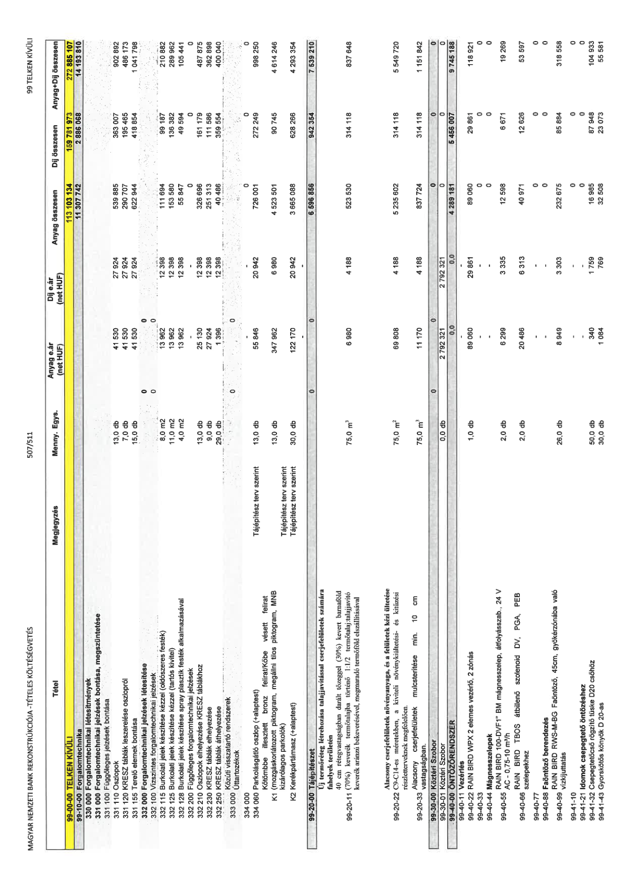

| Tétel | Menny. | Egys. | Anyag e.ár (net HUF) | Díj e.ár (net HUF) | Anyag összesen (net HUF) | Díj összesen (net HUF) | Anyag+Díj összesen (net HUF) |
|---|---|---|---|---|---|---|---|
| 99-00-00 TELKEN KÍVÜLI | NaN | NaN | 0 | 0 | 113 103 134 | 159 781 973 | 272 885 107 |
| 99-10-00 Forgalomtechnika | NaN | NaN | 0 | 0 | 11 307 742 | 2 886 068 | 14 193 810 |
| 330 000 Forgalomtechnikai létesítmények | NaN | NaN | 0 | 0 | 0 | 0 | 0 |
| 331 000 Forgalomtechnikai jelzések bontása | NaN | NaN | 0 | 0 | 0 | 0 | 0 |
| 331 100 Függőleges jelzések bontása | NaN | NaN | 0 | 0 | 0 | 0 | 0 |
| 331 110 Oszlopok | 13,0 | db | 41 530 | 27 924 | 539 885 | 363 007 | 902 892 |
| 331 120 KRESZ táblák leszerelése oszlopról | 7,0 | db | 41 530 | 27 924 | 290 707 | 195 465 | 486 173 |
| 331 155 Terelő elemek bontása | 15,0 | db | 41 530 | 27 924 | 622 944 | 418 854 | 1 041 798 |
| 332 000 Forgalomtechnikai jelzések létesítése | NaN | NaN | 0 | 0 | 0 | 0 | 0 |
| 332 100 Vízszintes forgalomtechnikai jelzések | NaN | NaN | 0 | 0 | 0 | 0 | 0 |
| 332 115 Burkolati jelek készítése kézzel | 8,0 | m2 | 13 962 | 12 398 | 111 694 | 99 187 | 210 882 |
| 332 125 Burkolati jelek készítése (tartós) | 11,0 | m2 | 13 962 | 12 398 | 153 580 | 136 382 | 289 962 |
| 332 128 Burkolati jelek spray plasztik | 4,0 | m2 | 13 962 | 12 398 | 55 847 | 49 594 | 105 441 |
| 332 200 Függőleges forgalomtechnikai jelzések | NaN | NaN | 0 | 0 | 0 | 0 | 0 |
| 332 210 Oszlopok elhelyezése | 13,0 | db | 25 130 | 12 398 | 326 696 | 161 179 | 487 875 |
| 332 230 KRESZ táblák elhelyezése | 9,0 | db | 27 924 | 12 398 | 251 313 | 111 586 | 362 898 |
| 332 250 KRESZ táblák áthelyezése | 29,0 | db | 1 396 | 12 398 | 40 486 | 359 554 | 400 040 |
| 333 000 Úttartozékok | NaN | NaN | 0 | 0 | 0 | 0 | 0 |
| 334 060 Parkolásgátló oszlop (+alaptest) | 13,0 | db | 55 846 | 20 942 | 726 001 | 272 249 | 998 250 |
| Kőtömbe illesztett bronz felirat K1 | 13,0 | db | 347 962 | 6 980 | 4 523 501 | 90 745 | 4 614 246 |
| K2 Kerékpártámasz (+alaptest) | 30,0 | db | 122 170 | 20 942 | 3 665 088 | 628 266 | 4 293 354 |
| 99-20-00 Tájépítészet | NaN | NaN | 0 | 0 | 6 596 856 | 942 354 | 7 539 210 |
| Új termőréteg létrehozása talajjavítással | 75,0 | m3 | 6 980 | 4 188 | 523 530 | 314 118 | 837 648 |
| 99-20-22 Alacsony cserjefelületek | 75,0 | m2 | 69 808 | 4 188 | 5 235 602 | 314 118 | 5 549 720 |
| 99-20-33 Alacsony cserjefelületek mulcs | 75,0 | m3 | 11 170 | 4 188 | 837 724 | 314 118 | 1 151 842 |
| 99-30-00 Köztéri Szobor | NaN | NaN | 0 | 0 | 0 | 0 | 0 |
| 99-30-01 Köztéri Szobor | 0,0 | db | 2 792 321 | 2 792 321 | 0 | 0 | 0 |
| 99-40-00 ÖNTÖZŐRENDSZER | NaN | NaN | 0 | 0 | 4 289 181 | 5 456 007 | 9 745 188 |
| 99-40-22 RAIN BIRD WPX 2 elemes vezérlő | 1,0 | db | 89 060 | 29 861 | 89 060 | 29 861 | 118 921 |
| 99-40-55 RAIN BIRD 100-DVF1" BM mágnesszelep | 2,0 | db | 6 299 | 3 335 | 12 598 | 6 671 | 19 269 |
| 99-40-66 RAIN BIRD TBOS átbillenő szolenoid | 2,0 | db | 20 486 | 6 313 | 40 971 | 12 626 | 53 597 |
| 99-40-99 RAIN BIRD RWS-M-BG Faöntöző | 26,0 | db | 8 949 | 3 303 | 232 675 | 85 884 | 318 558 |
| 99-41-32 Csepegtetőcső rögzítő tüske | 50,0 | db | 340 | 1 759 | 16 985 | 87 948 | 104 933 |
| 99-41-43 Gyorskötős könyök D 20-as | 30,0 | db | 1 084 | 769 | 32 508 | 23 073 | 55 581 |
